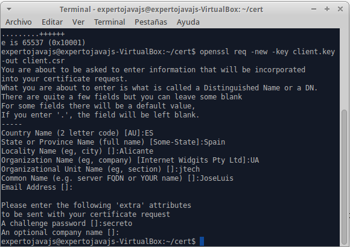
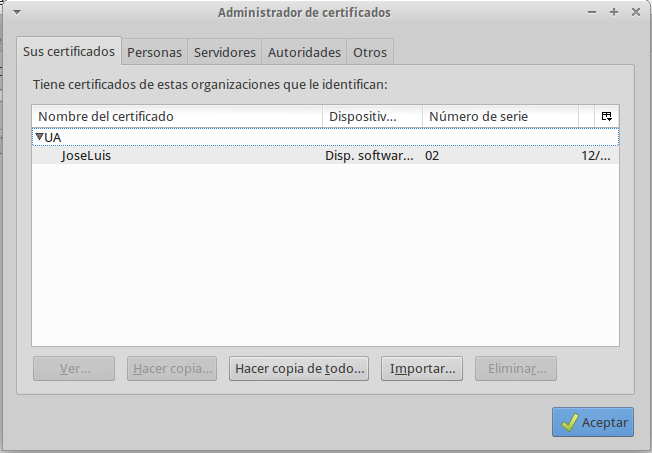

4. Certificados digitales y SSL
Esta sesión está dedicada a entender en qué consiste la seguridad en la capa de transporte y cómo utilizar certificados digitales.
4.1. Seguridad en la capa de transporte
4.1.1. Certificados digitales
Junto con los passwords, el mecanismo de autentificación más común en aplicaciones enterprise son los certificados. Comúnmente se emplean para autentificar al servidor, pero también se pueden usar para el cliente, como se hace en la mayoría de organismos oficiales que ofrecen servicios a través de la red.
El uso de certificados viene derivado de la criptografía asimétrica en las que se trabaja con dos claves una privada y una pública. En el caso de una comunicación emisor/receptor podemos plantear dos supuestos:
-
El emisor encripta un mensaje mediante una clave pública y el receptor lo desencripta mediante una clave privada que sólo él conoce. Este tipo de comunicación garantiza la confidencialidad del mensaje pues sólo el receptor puede saber qué contiene realmente.
-
El emisor encripta un mensaje mediante una clave privada que sólo él conoce. El receptor en cambio lo desencripta con una clave pública que cualquier puede utilizar. Mediante este sistema garantizamos la identidad del emisor, y es la base de la firma digital.
Un certificado digital no es ni más ni menos que un pequeño documento en el que incluye información sobre la identidad de un individuo o empresa, y una clave pública asociada a este individuo. Por este motivo, también se les conoce como certificados de clave pública o certificados de identidad. Existen varios formatos para certificados digitales no obstante los más comunes se rigen por el estándar X.509.
Esta asociación debe ir firmada digitalmente por alguien de confianza que le otorgue validez, que son las denominadas autoridades de certificación (CA). Hay autoridades de certificación privadas, compañías como Thawte o Verisign, y también públicas. En España tenemos la FNMT y en muchas comunidades autónomas también tienen sus propias CA’s.
Estas entidades a su vez utilizan certificados digitales para acreditar su identidad y poder firmar digitalmente nuestros certificados, por tanto podríamos llegar a plantearnos ¿Quién firma los certificados de las autoridades certificadoras?
Para evitar una sucesión de certificados sin fin, existen los denominados certificados autofirmados, es decir firmados por el propio titular del certificado. Evidentemente estos certificados son un punto crítico en la seguridad del sistema y sólo deben obtenerse de fuentes y métodos absolutamente fiables. Normalmente vienen ya instalados en los sistemas (servidores de aplicaciones o navegadores) o se obtienen de forma presencial.
La secuencia anidada de certificados se denomina cadena de confianza (chain of trust). En dicha cadena, el certificado auto-firmado se denomina certificado raíz (root certificate).
4.1.2. Introducción a SSL
SSL es un protocolo es un protocolo desarrollado por Netscape, para permitir confidencialidad y autenticación en Internet. Funciona como una capa adicional con lo cual es posible combinarlo con HTTP, FTP o TELNET que son protocolos que operan en la capa aplicación de TCP/IP.
Para establecer una comunicación segura, cliente y servidor entablan un diálogo denominado handshake:
Las fases son las siguientes:
-
Solicitud de SSL: El cliente solicita al servidor un recurso mediante conexión segura SSL. El servidor normalmente acepta este tipo de peticiones por un puerto distinto al habitual.
-
El servidor responde enviando un certificado digital para que el cliente pueda comprobar la identidad del servidor, el algoritmo de criptografía más potente de los que ambos puedan utilizar y una clave pública para encriptar la información que van a intercambiar.
-
El cliente comprueba si el certificado es de un sitio de confianza y si esto es así genera una clave privada de "sesión" aleatoria que envía encriptada al servidor con su clave pública.
-
Esta clave de sesión junto con el algoritmo de encriptación es lo que se va a utilizar en cada mensaje entre cliente y servidor. Para verificar los valores negociados, ambas partes se envían de nuevo la clave de sesión y verifican que coincidan. Si esto es así, la fase de handshake finaliza y se establece el canal de comunicación seguro.
4.1.3. One-Way y Two-Way SSL
En el ejemplo de handshake anterior, observamos que es el servidor el que en un momento dado debe acreditar su identidad mediante un certificado digital, que el cliente debe validar. Este tipo de negociación recibe el nombre de One-Way SSL.
Adicionalmente, puede exigir al cliente al cliente que se identifique enviando otro certificado digital, que el servidor deberá validar. Si el uno confía en el otro, se establecerá el canal de comunicación seguro. A esta modalidad de SSL se la denomina Two-Way SSL.
4.1.4. Creación de una CA ficticia
El primer paso para trabajar con certificados y SSL es verificar que tenemos instaladas las herramientas OpenSSL. Podéis probar a ejecutar openssl y si no se reconoce el comando instalarlo con:
sudo apt-get install opensslUna vez instalado, hay que realizar un cambio en la configuración, que nos va a permitir firmar certificados:
/usr/lib/ssl/openssl.conf Línea 170
basicConstraints=CA:TRUE # Antes FALSEUtilizaremos openssql para generar certificados y firmar, y la herramienta keytool de java para importar estos certificados en almacenes de certificados en formato JKS.
| keytool es una herramienta muy completa pero está pensada para trabajar con certificados autofirmados (que adicionalmente pueden ser enviados a una CA para que los firme). OpenSSL proporciona comandos para firmar certificados a partir de uno especificado como parámetro, a modo de CA y simular completamente lo que haría una autoridad de certificación. |
Los almacenes son ficheros protegidos donde podemos almacénar uno o mas certificados digitales. Cada certificado digital estará asociado a un alias que se utilizará para recuperar el certificado del almacén. Es habitual tener un almacén para los certificados de identidad (aquellos que el servidor de aplicaciones utiliza para identificarse) y otro de confianza (certificados de cliente y/o CA’s considerados como válidos).
1.- Para empezar, vamos a definir un certificado de CA ficticia que será quien de "credibilidad" a los certificados que vamos a crear.
openssl req -x509 -newkey rsa:2048 -keyout selfkey.pem -out selfcert.pem -days 365Este comando nos pedirá la información que describirá a nuestra CA:

2.- Ahora importaremos este certificado en un almacén denominado trust.jks (certificados de confianza)
keytool -import -trustcacerts -alias trustself -keystore trust.jks -file selfcert.pem -keyalg RSA -keypass secreto -storepass secretoA continuación veremos como definir configurar WildFly en función del tipo de seguridad que queremos configurar.
Configuración del servidor para One-Way SSL
En esta modalida de SSL, es el servidor el que debe identificarse al cliente y éste confiar en él (o no).
Pasos a seguir:
1.- Crear un certificado que identifique a nuestro servidor, para ello utilizaremos OpenSSL y los siguientes comandos:
openssl genrsa -out server.key 1024 #crear una clave nueva de certificado
openssl req -new -key server.key -out server.csr #crear una petición de certificado.Al ejecutar el segundo comando, la herramienta nos irá pidiendo datos para incluir en la petición de certificado:
Si quisiéramos obtener un certificado aprobado por una CA real, deberíamos enviar el fichero server.csr a dicha autoridad ( y pagar), y esta nos generará el certificado y nos dará las instrucciones necesarias para descargarlo.
| Si alguien está interesado, algunas CA’s como Verisign ofrecen certificados válidos durante 30 días a modo de prueba. |
2.- Creación del certificado firmado con el certificado con nuestra CA:
openssl x509 -req -days 365 -in server.csr -CA selfcert.pem -CAkey selfkey.pem -set_serial 01 -out server.crt| El serial number del certificado sirve para identificar los certificados firmados por una CA, y debe ser distinto para cada certificado. Por simplicidad, vamos a enumerarlos manualmente. |
3.- Importar el certificado en nuestro almacén de identidad:
La herramienta keytool no permite importar la clave privada de los certificados en los almacenes a partir de un certificado y su clave, por lo que tenemos que recurrir a un formato intermedio:
# Convertir a PKCS12
openssl pkcs12 -export -name servercert -in server.crt -inkey server.key -out keystore.p12
#finalmente importarlo en jks
keytool -importkeystore -destkeystore identity.jks -srckeystore keystore.p12 -srcstoretype pkcs12 -alias servercert -keypass secreto -storepass secreto4.- Comprobar que los certificados están importados correctamente:
keytool -list -v -keystore trust.jks -storepass secreto
keytool -list -v -keystore identity.jks -storepass secreto| Hay muchas contraseñas involucradas en este proceso. Para no complicarnos demasiado utilizaremos la palabra "secreto" como contraseña en todos los casos. |
5.- Copiar los almacenes a la carpeta standalone/configuration
6.- Definir el realm asociado a los certificados:
<security-realm name="SecureRealm">
<server-identities>
<ssl>
<keystore path="identity.jks" relative-to="jboss.server.config.dir" keystore-password="secreto" alias="servercert" key-password="secreto"/>
</ssl>
</server-identities>
</security-realm>7.- Para activar SSL hay que definir un https-listener dentro del subsistema undertow (el servidor web de WildFly):
<subsystem xmlns="urn:jboss:domain:undertow:1.2">
<buffer-cache name="default"/>
<server name="default-server">
<http-listener name="default" socket-binding="http"/>
<https-listener name="https" socket-binding="https" security-realm="SecureRealm"/>Hay dos elementos interesantes en esta línea:
-
El parámetro socket_binding está asociado a "https" pero aplica tanto a las peticiones estándar (8443) como a las de management-https, (9993).
-
El parámetro security-realm asocia el canal a un Security Realm que será el que contenga al certificado de identidad del servidor.
Con esta configuración, estamos indicando que para las peticiones que lleguen por https nuestro servidor se identificará con el certificado asociado al alias servercert.
8.- Iniciar el servidor. Con esto ya hemos completado los pasos para implementar One Way SSL pero ahora nos queda hacer que el navegador reconozca el certificado servercert como válido.
Para conseguir esto basta con importar el certificado de la CA en la lista de certificados de autoridades certificadoras del navegador. En Firefox iremos a Editar→Preferencias→Avanzado→Cifrado→Ver certificados:
Pincharemos en importar y seleccionaremos el archivo selfcert.pem
Se nos pedirá definir para que se utilizará el certificado. Marcamos todas las opciones y aceptamos:
A partir de ahora, si accedemos a la consola, o a cualquier aplicación desplegada en el servidor veremos que se acepta el certificado que envía el servidor:

Cambios en las aplicaciones web
Si queremos que una serie de recursos de nuestra aplicación se muestren forzosamente mediante SSL, debemos añadir una restricción al archivo web.xml
<security-constraint>
<web-resource-collection>
<web-resource-name>Redireccion SSL</web-resource-name>
<url-pattern>/*</url-pattern>
</web-resource-collection>
<user-data-constraint>
<transport-guarantee>CONFIDENTIAL</transport-guarantee>
</user-data-constraint>
</security-constraint>Securizar el acceso a la consola web de administración
Ahora que ya conocemos como utilizar SSL, podemos aplicar estos mismos cambios al realm de administración de modo que podamos forzar el acceso a la consola mediante una conexión segura. Los cambios son los siguientes:
1.- Añadir el certificado de servidor al ManagementRealm:
<server-identities>
<ssl>
<keystore path="identity.jks" relative-to="jboss.server.config.dir" keystore-password="secreto" alias="servercert" key-password="secreto"/>
</ssl>
</server-identities>2.- Asociar el puerto seguro a la interfaz de administración:
<http-interface security-realm="ManagementRealm" http-upgrade-enabled="true">
<socket-binding https="management-https"/> <!-- Sustituye a management-http -->
</http-interface>Configuración del servidor para Two-Way SSL
Mediante este sistema cliente y servidor se identifican y validan recíprocamente. El configurar esta modalidad de SSL es sencillo, partiendo de la configuración One-Way.
-
Crear un certificado de cliente, firmado por nuestra CA ficticia:
openssl genrsa -out client.key 1024 openssl req -new -key client.key -out client.csr openssl x509 -req -days 365 -in client.csr -CA selfcert.pem -set_serial 02 -CAkey selfkey.pem -out client.crt -
Convertir al formato PKCS12 que incluye clave pública y privada y es reconocido por Firefox:
openssl pkcs12 -export -name clientcert -in client.crt -inkey client.key -out clientstore.p12 -
Ahora importaremos el certificado en el navegador. Recordad que ya tenemos el de la CA. Se debe importar el archivo .p12 en la pestaña de "sus certificados":
 -
Pasamos a continuación a WildFly donde activaremos la función de autenticación en el Security Realm SecureRealm especificando el almacén de certificados de confianza.
<security-realm name="SecureRealm"> .... <authentication> <truststore path="trust.jks" relative-to="jboss.server.config.dir" keystore-password="secreto"/> </authentication> </security-realm> -
Por último, tenemos que indicar que queremos que el servidor "pida" al cliente que se identifique. Esto lo hacemos añadiendo un parámetro adicional al _http-listener-:
<https-listener name="https" socket-binding="https" security-realm="SecureRealm" verify-client="REQUESTED"/>El parámetro verify-client tiene tres valores posibles:
- NOT_REQUESTED
-
No solicitar certificado a cliente (valor por defecto)
- REQUESTED
-
Se pide certificado de cliente, pero si no se presenta se permite continuar la conexión segura.
- REQUIRED
-
Se requiere un certificado de cliente válido para poder establecer una conexión segura.
Autorización del cliente mediante certificados
A partir de un usuario identificado por su certificado de cliente, también podemos determinar si tiene un rol asociado y en consecuencia permitirle o no el acceso a determinados recursos. En la sesión anterior hemos aprendido a definir login modules específicos para autenticación y autorización de usuarios con respecto a la información de usuarios que teníamos en ficheros, base de datos o en un directorio LDAP. Ahora introduciremos un nuevo login module: CertificateRoles.
<security-domain name="seguridad-cert" cache-type="default">
<authentication>
<login-module code="CertificateRoles" flag="required">
<module-option name="securityDomain" value="seguridad-cert"/>
<module-option name="verifier" value="org.jboss.security.auth.certs.AnyCertVerifier"/>
<module-option name="rolesProperties" value="file:/usr/local/wildfly/standalone/configuration/roles.properties"/>
</login-module>
</authentication>
<jsse keystore-password="secreto" keystore-url="file:/usr/local/wildfly/standalone/configuration/trust.jks" truststore-password="secreto" truststore-url="file:/usr/local/wildfly/standalone/configuration/trust.jks"/>
</security-domain>En este fragmento de XML definimos un nuevo dominio de seguridad _seguridad-cert, en el que introducimos nuevo login module. Los parámetros que son novedad para nosotros son:
-
rolesProperties: Este login module requiere de un fichero externo en el que se indique para cada identidad asociada a un certificado (CN) a que rol o roles pertenece.
-
jsse: Referencia al almacén de seguridad de certificados de confianza.
El fichero rolesProperties sigue el mismo formato que el fichero application-roles.properties sin embargo el usuario se debe identificar por el DN (distinguished name) completo del certificado, es decir con todos los datos que se nos pedía a la hora de generarlo. Además, tanto los espacios como los signos "=" se deben escapar con contrabarras. Como ejemplo:
CN\=JoseLuis,\ OU\=jtech,\ O\=UA,\ L\=Alicante,\ ST\=Spain,\ C\=ES=rol_usuarioEl último signo "=" no se escapa pues es el que separa el usuario de los roles.
Por último, también hay que realizar cambios en las aplicaciones, concretamente hay que cambiar el modo de autenticación de la aplicación web de BASIC a CLIENT-CERT en el fichero web.xml:
<login-config>
<auth-method>CLIENT-CERT</auth-method>
<!--<auth-method>BASIC</auth-method>-->
<realm-name>mydomain</realm-name>
</login-config>Comunicación SSL a través de proxies
Como ya sabemos, las conexiones SSL son conexiones punto a punto entre cliente y servidor y no admite elementos intermedios que puedan poner en riesgo la seguridad de las comunicaciones. Sin embargo, hay elementos como los denominados balanceadores de carga, que son capaces de encaminar una petición a distintos servidores en función de la carga de trabajo u otros parámetros.
En el caso de trabajar con este tipo de elementos, la conexión SSL se divide en dos tramos, una conexión segura entre el cliente y el "proxy", y otra entre el proxy y el servidor. Ambas conexiones se establecen de la misma forma que una conexión directa, es decir una parte hace de cliente y la otra de servidora, sin embargo el certificado del cliente no se utiliza para negociar la conexión con el servidor, si no el del propio proxy. Gráficamente:
Bajo este supuesto, podremos hacer llegar las credenciales del cliente al servidor, si utilizamos un proxy Apache en este elemento intermedio. Una de sus funciones es la de "inyectar" la información del certificado cliente en una cabecera especial, denominada SSL_CLIENT_CERT. Esta información también estará disponible para las aplicaciones, si estas consultan la cabecera en el parámetro request de la petición.
4.2. Referencias
4.3. Ejercicios de certificados digitales y SSL
Vamos a seguir trabajando con el dominio seguridad y la aplicación apli-intranet de la sesión anterior. Para poder realizar los ejercicios se debe haber completado, al menos, el primer ejercicio de la sesión anterior.
4.3.1. Encriptación de las comunicaciones One-Way SSL (0.4 puntos)
Queremos reforzar la seguridad de las comunicaciones con nuestro servidor, creando un canal seguro SSL en el que el servidor se identificará y el navegador del cliente deberá reconocer dicho certificado como válido.
Hay que crear los certificados de la CA, de servidor, importar la CA en el navegador y configurar el servidor para que utilice SSL.
4.3.2. Encriptación de las comunicaciones con Two-Way SSL (0.4 puntos)
Ahora lo que se pretende es que tanto servidor como cliente validen sus certificados respectivos. A los certificados ya creados en el ejercicio anterior se les une un certificado asociado a un Usuario1 y que sea el certificado con el que el navegador se identifique para establecer la conexión.
Siguiendo los pasos descritos en la teoría, configurar el servidor para que se requieran certificados de cliente y se validen.
| Debéis usar la misma contraseña para los almacenes que hemos visto en teoría para que el ejercicio pueda ser corregido. |
4.3.3. Autenticación de usuario a partir del certificado (0.4 puntos)
En el ejercicio anterior generamos un certificado identificativo para el cliente mediante el cual se establece un canal seguro si el servidor lo acepta. Sin embargo este mecanismo convive con la validación BASIC mediante usuario/password, con lo que tenemos que seguir pidiendo credenciales al usuario para saber exactamente quién está trabajando desde el navegador y a qué grupo pertenece.
La propuesta de este ejercicio es hacer los cambios pertinentes en el dominio de seguridad y en la aplicación para que valide e identifique directamente al usuario cliente en base a su certificado sin comprobar nada más. Sería algo parecido a conectarnos a la web de la AEAT o a la Seguridad Social empleando un certificado digital que nos identifique.
Para completar el ejercicio teneis que:
-
Asociar el certificado del usuario1, del ejercicio anterior al rol de usuario.
-
Crear un nuevo certificado asociado a un usuario2 y asociarlo al rol de administrador.
-
Configurar el servidor para que se utilice el login module de certificados.
-
Cambiar la seguridad de la aplicación intranet para que se valide en base a certificados.
-
Comprobar que si nos autenticamos con los certificados de usuario, cada uno se asocia al rol correspondiente.
| Si añadis los tags para forzar el acceso SSL a la aplicación, podéis tener problemas a la hora de tratar los certificados de cliente, por la redirección que hace la aplicación apli-intranet, desde el JSP al servlet de consulta. Lo más sencillo, no utilizarlo.</note> |
| Especificar tanto en web.xml como en el descriptor jboss-web.xml el nombre del security domain que vayáis a utilizar y estad atentos al fichero de auditoría de seguridad (audit.log). |
4.3.4. Entrega
Los entregables de esta sesión son el proyecto apli-intranet, los ficheros properties que defináis y el fichero standalone.xml con la configuración del servidor. Comentad en el código o en los descriptores los cambios que vayáis haciendo para poder comprobar que habéis completado los distintos ejercicios propuestos.